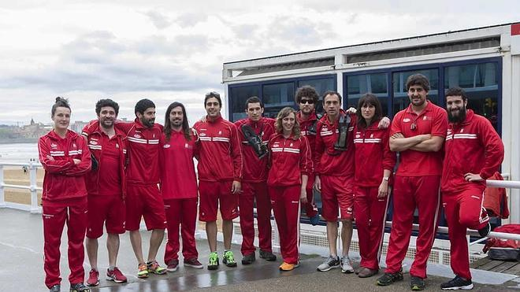

La playa de San Lorenzo está situada en pleno centro de Gijón. Con una longitud de 1550 metros y forma de concha, es una de las playas más emblemáticas del Principado de Asturias. Se prolonga desde la escalera 0 ("La Cantábrica"), situada tras la Iglesia de San Pedro, hasta la escalera número 16 (zona popularmente conocida como "el Tostaderu"), en la desembocadura del río Piles. No obstante se extiende una zona rocosa durante trescientos metros más hasta el "Mayán de Tierra", llegando a alcanzar una longitud total de unos 1,8 km. Paralela a ella discurre el Paseo del Muro de San Lorenzo, que continúa hacia el Este más allá de la propia playa con la conocida senda costera del Cervigón, un recorrido marítimo de más de 2 kilómetros que nos acerca otras playas como la del Rinconín o la de Peñarrubia.
Se caracteriza por una arena fina y dorada, y por unas aguas de buena calidad. El oleaje es moderado/fuerte y se distinguen 3 zonas de baño diferenciadas y vigiladas por socorristas: Escalerona (escalera 4), Centro (escaleras 7-8) y Piles (escalera 12). Normalmente la zona de la Escalerona es la que presenta mejores condiciones de oleaje para el baño. La gran amplitud de las mareas que se da en esta playa condiciona mucho su anchura.
Su alta ocupación y su ubicación en pleno centro urbano garantizan todo tipo de servicios: Duchas, lavapiés, alquiler de tumbonas y hamacas, guardarropa, taquillas, aseos, fuentes de agua, etc. Cuenta con servicio de salvamento. Desde principios de mayo presta vigilancia fines de semana y festivos; desde el 1 de junio hasta el 30 de septiembre de forma permanente en horario de 10:00 a 21:00 horas. La central de salvamento se encuentra instalada en la escalera número 12 y cuenta con servicio de megafonía e información, emitiendo partes meteorológicos y del estado de la mar cada hora. En el mismo edificio de servicios se encuentra una sede de la Policía Local. También hay una Oficina de Turismo a la altura de la escalera 4.

La playa está preparada para el volley-playa, con dos pistas en la escalera 15, y el fútbol playa, que se practica a la altura de la escalera 4 (conocida popularmente como La Escalerona) cuando la marea lo permite. Otros deportes marítimos como el surf, kayak de mar o windsurf también tienen lugar en esta playa.
En el verano del año 2010 se izó por primera vez la bandera "Ecoplayas" que fue conseguida de nuevo para la temporada 2011 También para el año 2011 se ha conseguido el reconocimiento "Q" de Calidad Turística.

| Caracteristicas generales | Caracteristicas especificas | Seguridad | Accesibilidad | ||||
|---|---|---|---|---|---|---|---|
| Ubicacion: | España, Asturias | Tipo de Playa: | Urbana | Equipo de vigilancia: | si | Accesible a discapacitados: | si |
| Longitud: | 1.500m a 1.800m | Composicion: | Sustrato arenoso | Señalizacion de peligro: | si | Tipo de acceso: | Facil |
| Ancho medio: | variable (40 - 100m) | Tipo de arena: | Dorada | Policia Local: | si | Tipo de acceso: | Facil (Rodado, A pie, Bus) |
| Grado ocupacion: | Muy alta | Condiciones de baño: | Oleaje moderado a fuerte. | Equipo de salvamento: | si | Señalizacion de Acceso: | si |
| Grado urbanizacion: | Muy alta | ||||||
Pagina realizada por: VICTOR MACLANDA ORDOÑEZ. Para un trabajo del modulo "Lenguaje de Marcas"